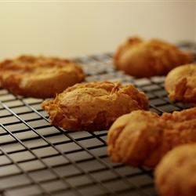

Pumpkin Spice Cookie

Description
This simple pumpkin spice recipe is perfect for when you're having company over and need a dessert that will create a hearty supply of goodies. Use boxed cake mix for easy cookies.
Ingredients
- 1 (15.25 ounce) package spice cake mix
- 1 (15 ounce) can solid pack pumpkin
Steps
- Preheat the oven to 350 degrees F (175 degrees C). Grease cookie sheets.
- Stir together cake mix and pumpkin in a large bowl until well blended. Drop by rounded spoonfuls onto the prepared cookie sheets.
- Bake in the preheated oven until centers are set, 18 to 20 minutes.
Allow cookies to cool on the baking sheets for 5 minutes before transferring to a wire rack to cool completely.
Previous
Next
Return to main page